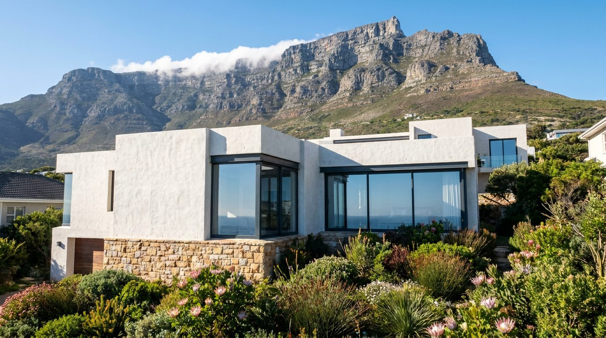
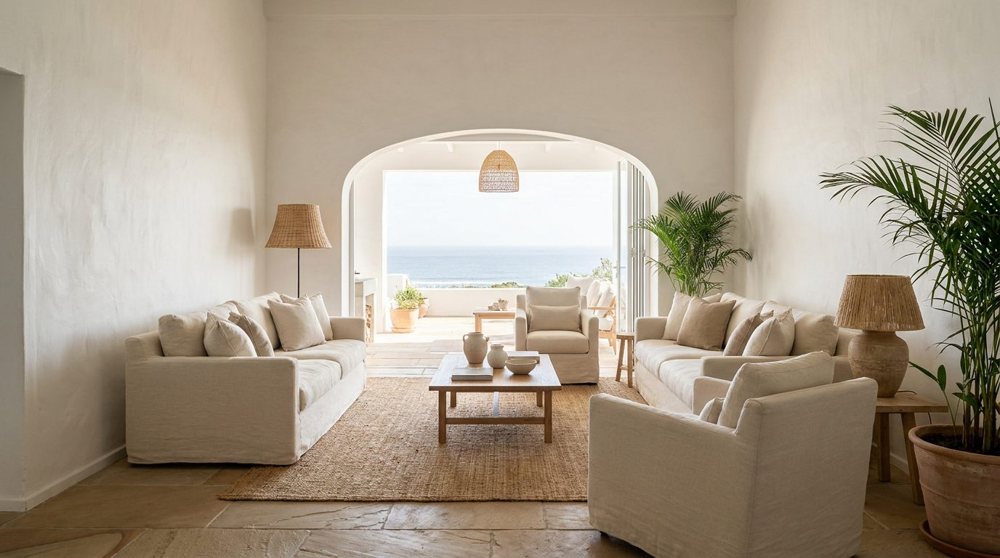

Atlante · INT-ZA-01 · Sudafrica · Africa
Casa contemporanea a Cape Town sul paesaggio atlantico
Esempi · esterno e interno


Perché funziona
A Cape Town il valore è il paesaggio: chi compra arredo italiano lo fa per stare in una casa che non lo copre. Il set quiet fatto di calce, arenaria e rovere regge il confronto con la montagna senza competere, e il made in Italy si riconosce nella giunzione e nella finitura, non nel decoro. È il mercato in cui il silenzio del prodotto vale più del logo.
Architettura · elementi riproducibili
- soggiorno 7x5 m, soffitto 3,2 m, una parete vetrata h 2,4 m e un'apertura larga 4,5 m sulla terrazza
- pareti in calce bianca con texture di pennello visibile
- pavimento in arenaria grigia 600x900 mm, superficie spazzolata, giunto 3 mm
- soffitto in perline di rovere oliato, passo 100 mm
- trave in cemento a vista h 300 mm che attraversa il locale
- camino lineare a parete 1,8 m, cassa in acciaio brunito
- serramenti in acciaio a profilo sottile, traverso a 2,2 m
- proporzione chiave: orizzontale 3:1, una sola campata libera verso il paesaggio
Fatto verificato: il Zeitz MOCAA a Cape Town è la conversione dei silos in cemento del Grain Silo complex, progetto di Heatherwick Studio: è il riferimento locale per cemento a vista e grandi vuoti.
Fatto verificato: la Norval Foundation è una fondazione d'arte contemporanea africana a Cape Town, con sede e spazi espositivi documentati sul sito ufficiale.
Valutazione: il Sudafrica di fascia alta premia la casa che non compete con il paesaggio, quindi quiet e con una sola apertura generosa invece di cinque.
Rischio AI: il Cape Dutch da cartolina (frontoni bianchi, persiane). Qui va escluso: il riferimento è la casa contemporanea, non il revival coloniale.
Luce
Prompt di generazione (EN)
Empty contemporary living room on a slope above the Atlantic seaboard near Cape Town, 7 x 5 m, ceiling 3.2 m, white lime-washed walls with visible brush texture, floor of grey Table Mountain sandstone 600 x 900 mm brushed finish with 3 mm joints, oiled oak ceiling boards at 100 mm pitch, one 2.4 m glass wall and a 4.5 m wide opening onto a terrace, exposed concrete beam 300 mm deep crossing the room, no furniture except one generic low bench. One key light: late afternoon sun from camera right at 45 degrees, 5400 K, long soft shadow across the stone floor, mountain silhouette held one and a half stops above the interior. 28 mm lens, camera height 1.2 m, two-point perspective, verticals parallel, no people, no text, no logos, no mirror.